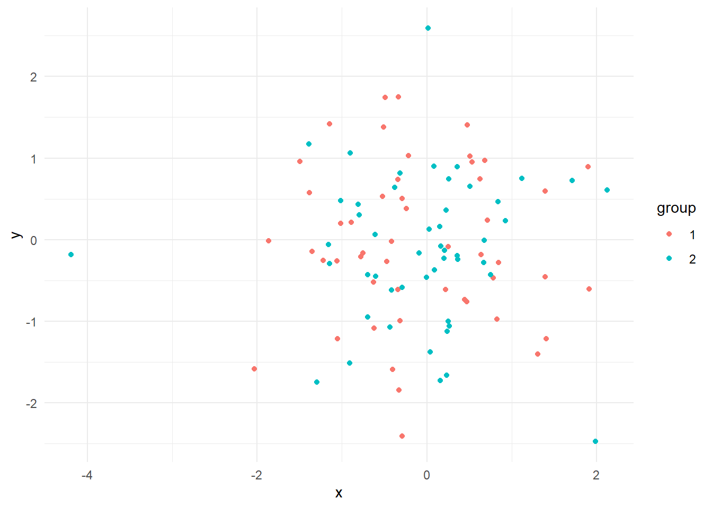

Make Your Graph Interactive! Transform ggplot Graphs into Interactive Visualizations with Plotly
살아 숨쉬는 그래프 그리기
R
Visualization
Author
Changjun Lee
Published
April 12, 2023
Introduction
Data visualization is a crucial aspect of data analysis, and static graphs are often the go-to method for many analysts. However, interactive graphs can significantly enhance user engagement and understanding of the data. In this blog post, we’ll walk you through the process of transforming a static ggplot graph into an interactive visualization using the Plotly package in R.
Step 1: Install and Load the Necessary Packages
Before you begin, make sure to install and load the required packages: ggplot2 and plotly. If you don’t have them installed, you can install them using the following code:
# Install packages if not already installedif (!requireNamespace("ggplot2", quietly =TRUE)) {install.packages("ggplot2")}if (!requireNamespace("plotly", quietly =TRUE)) {install.packages("plotly")}# Load packageslibrary(ggplot2)library(plotly)
Attaching package: 'plotly'
The following object is masked from 'package:ggplot2':
last_plot
The following object is masked from 'package:stats':
filter
The following object is masked from 'package:graphics':
layout
Step 2: Create a Sample Dataset and ggplot Graph
For this tutorial, we’ll create a sample dataset and a ggplot graph. You can replace this dataset and graph with your own data and visualization.
# Sample datasetdata <-data.frame(x =rnorm(100),y =rnorm(100),group =factor(rep(1:2, each =50)))# Create a ggplot graphp <-ggplot(data, aes(x = x, y = y, color = group)) +geom_point() +theme_minimal()p

Step 3: Convert the ggplot Graph into an Interactive Plotly Graph
Now that we have our ggplot graph, it’s time to make it interactive! We’ll use the ggplotly() function from the plotly package to convert our static graph into an interactive one.
# Convert ggplot graph to an interactive plotly graphinteractive_plot <-ggplotly(p)# Display the interactive graphinteractive_plot
You now have an interactive scatter plot, which allows users to hover over the points, zoom in and out, and pan the graph for a better view of the data. You can also customize the tooltip and other interactive features according to your needs.
Step 4: Display Custom Labels Instead of x and y Coordinates
To show custom labels instead of the default x and y coordinates when hovering over the points, you can modify the text aesthetic in ggplot and set the tooltip attribute in the ggplotly function.
# Add a custom label column to the datasetdata$label <-paste("Group:", data$group, "<br>Point ID:", seq_along(data$x))# Create a ggplot graph with custom hover labelsp <-ggplot(data, aes(x = x, y = y, color = group, text = label)) +geom_point() +theme_minimal()# Convert ggplot graph to an interactive plotly graph with custom tooltipsinteractive_plot <-ggplotly(p, tooltip ="text")# Display the interactive graph with custom labelsinteractive_plot
In this example, we’ve added a new column to the dataset called label containing custom text to be displayed when hovering over the points. We’ve updated the aes() function in ggplot to include the text aesthetic, and then specified the tooltip attribute in the ggplotly function to use the “text” aesthetic for tooltips.
Now, when you hover over the points, you’ll see custom labels (e.g., “Group: 1, Point ID: 1”) instead of the default x and y coordinates.
Conclusion
Transforming your static ggplot graphs into interactive visualizations with Plotly is a simple and powerful way to enhance user engagement and understanding. By following these steps, you can create captivating, interactive graphs for your data analysis projects and impress your audience with dynamic, data-driven insights. So, go ahead and make your graphs interactive!